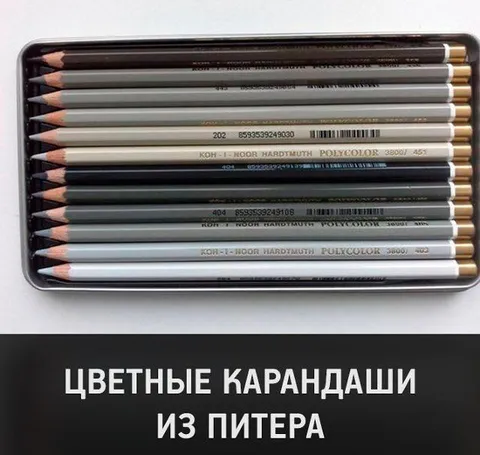

За ужином после работы мой изможденный ум долго всматривался в коробочку пирожных с надписью "набор эклеров". К самим эклерам вопросов нет. Но что смутило - эклеры в ней были все одинаковые. Сидел и думал - а должно ли название "набор" подразумевать разнообразие видов внутри? Или несколько одинаковых предметов - тоже набор?
Если вы купите набор цветных карандашей, а там все карандаши - красные, вы будете испытывать легкий диссонанс. Вроде набор, вроде цветные, но ощущение, что вас обманули. При этом же набор синих ручек явно состоит из нескольких одианково синих ручек.
Как набор по-агнлийски? Правильно, set. Вы заказываете мега-сет роллов на компанию и вам приезжает 100 одинаковых роллов. Разочарование? Однозначно. Набор конфет - тоже подразумевает некоторую вариативность. Но тоже - не всегда. Набор бокалов - напротив, будет выглядеть странно, если все бокалы в нем разные.
В моем любимом C++ (как и примерно везде) контейнер std::set вовсе требует уникальности содержимого, а не просто разнообразия. Иначе вам уже нужен std::multiset.
Так что же такое набор? Видимо, кому как удобно. Хотите разных эклеров - заказывайте ассорти. А когда мозг ломается от подобного несовершенства мира - пора идти спать.
